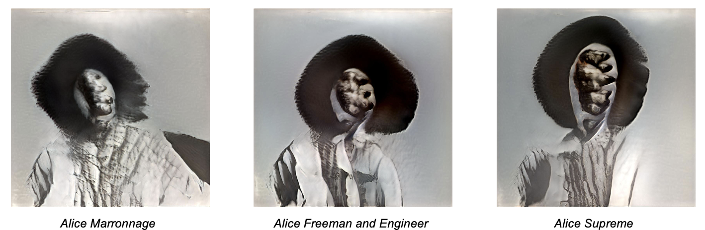
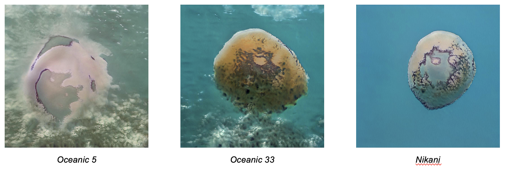

Methods and Tutorials in Spatial Research
Figure 1: OBAI diagram: environment, agent, state, reward, action B. Coleman 2023. Photo Credit: Beth Coleman.
Reality Was Whatever Happened. Octavia Butler AI and Other Possible Worlds (OBAI) marks the “generative” element that speculative fiction, like Butler’s own, produces. In the space of machine learning, OBAI attempts to slip past the border patrol that maintains the distinction of the human/non-human. Coleman enlisted a Generative Adversarial Network (GAN), for the image production. Importantly, generative modeling functions as an unsupervised learning task: sorting through unlabeled data to build patterns and map commonalities. The constraint―although clearly this is not limited to AI―might be put this way: How has meaning been locked into a system?
Effectively Reality Was Whatever Happened works along the following axes:
a) the technological stack or architecture demonstrates the ontology that there are no innocent models. If a systems is trained to distinguish white dogs or desert landscapes or colonial drawings of birds particular world view, angles, and framings are captured and set as a standard. In other words, one can comprehend predictive models as generative of standards.
b) articulating through design a comprehension of model ontology sufficient to break it: how might generative AI supersede a reinscription of the normative.
The advantage of the GAN system design, pivotal at a certain point of generative AI development, is its speed and light data load with powerful outcomes. Before introducing new data or a novel dataset, the GAN is pretrained on sets of images—faces, landscapes, animals, etc. There is a generation of type based on the distinct training corpus: what are the properties of the human face; what are the types of trees, and so on. Within the GAN there are two dynamic components, a generator and a detector (m1 & m2) that iterate back and forth until the system recognizes parity between image generation based on new data and the benchmark of the training data: faces look like faces; white dogs are not white wolves.
With Reality Was Whatever Happened, the question went somewhere along the lines of, What if the thing generated to be detected is alien. Not a match of same but the generation of difference. In this sense OBAI leveraged GAN affordances of high outcome with law data input to formulate hand-curated data sets that work against the grain of normative reinscription. In other words, to actually generate.
Generation one, the Alice series was comprised of a set of black feminine figures. That initial system tuning toward a contrapuntal GAN production.
Figure 2: Generation two, Oceanic enlisted ocean figures to train on the Alice GAN. Photo Credit: Beth Coleman.
Figure 3: Generation three, BPP Landscapes, are related in process but use a new GAN model to interpolate arrays of paramilitaristic grouping into landscapes (not pictured). Photo Credit: Beth Coleman.
Generation three, BPP Landscapes, are related in process but use a new GAN model to interpolate arrays of paramilitaristic grouping into landscapes (not pictured).
Instead of detecting face for face in a normalizing account, OBAL GAN searched face and creatures, ocean, land…The drive to match as it was built into the system is overdriven to produce parity in the face of the incommensurate. Making kin with aliens.
All images B. Coleman 2023 realitywaswhateverhappened.com
Here is an example of a tutorial we have shared with other speakers to reference:
Jia Zhang’s Asian American Dot Density Map, which shares steps, but also links to outside articles/tutorials for more basic procedures:
Asian American Dot Density Map
Soph & Sasha’s Open Weather DIY Ground Station. Much longer than needed:
Open Weather DIY Ground Station
APT Open Weather Community
Forensic Architecture and Nicholas Masterton’s Camera Dolly Set up: